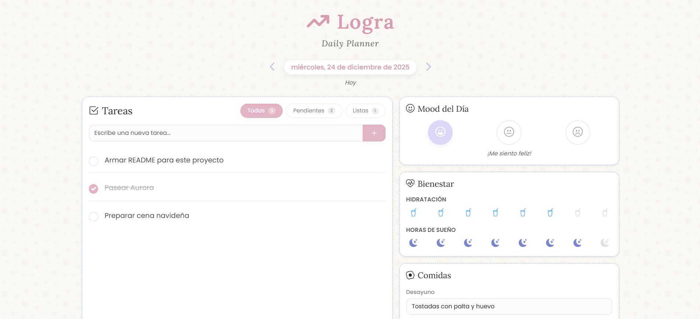
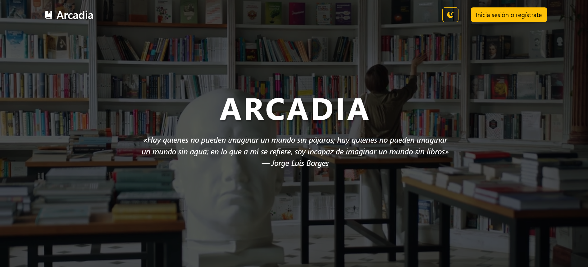
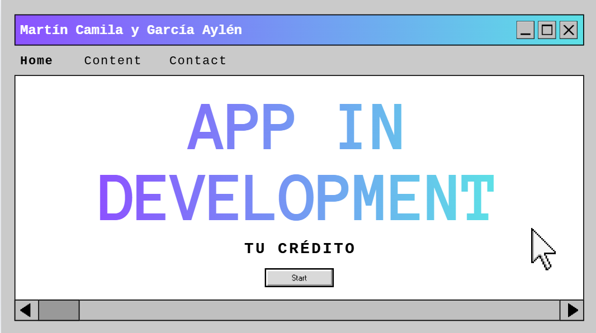

Logra
TerminadoDaily planner digital para la organización personal. Permite planificar tareas diarias, registrar comidas y estados de ánimo y hacer seguimiento de las tareas diarias de forma simple e intuitiva.

Daily planner digital para la organización personal. Permite planificar tareas diarias, registrar comidas y estados de ánimo y hacer seguimiento de las tareas diarias de forma simple e intuitiva.

E-commerce completo para venta de libros. Incluye panel administrador para gestionar el catálogo, los pedidos y las estadísticas de ventas.

Aplicación de seguimiento de préstamos personales, con control de clientes, cuotas, pagos, morosidad y estado general de la deuda.